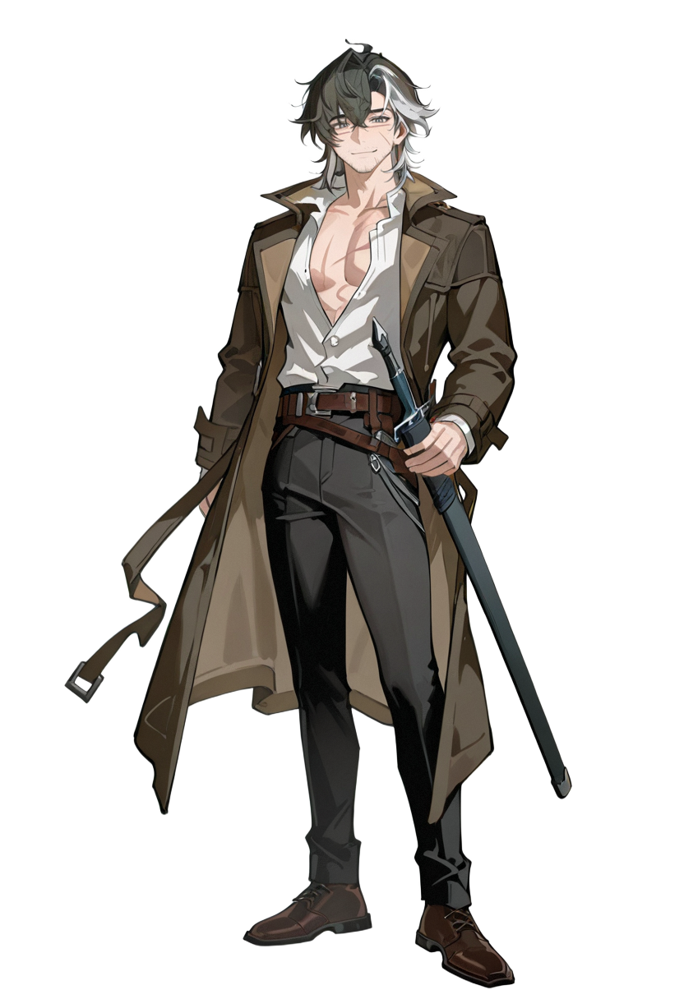
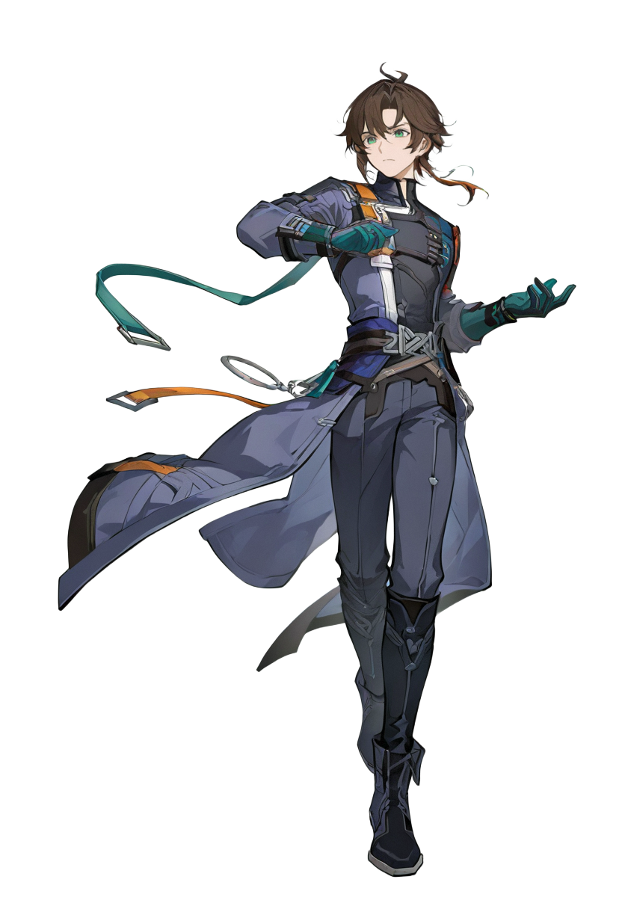
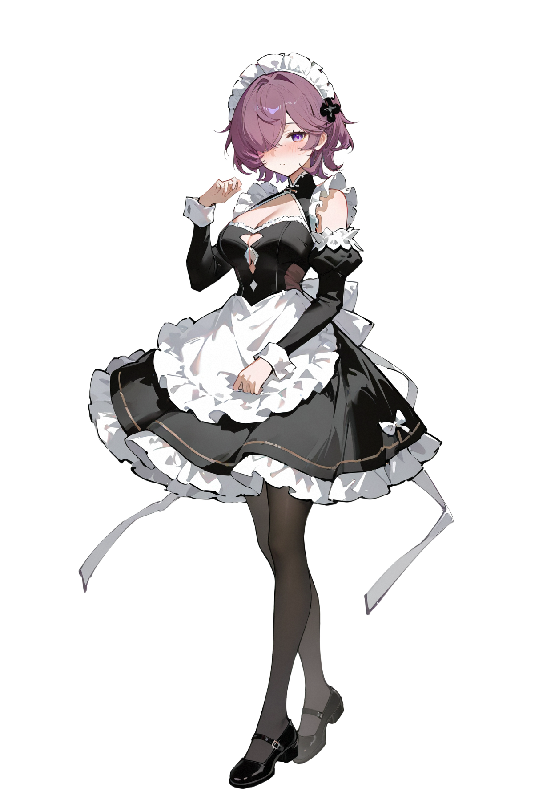

幻想世界RPG
— AETHELRON —
剑与魔法·命运交织·史诗复兴
这个世界存在着名为铭蚀刻路的东西，它在生来时便已经存在，人们将此认定为神明的赐福。生灵依靠着与生俱来的能力书写自己的命运。无论是野兽还是类人物种，都通过铭蚀刻路谋求生存，获取权力。命运终究垂怜于一人而代价则是大规模的牺牲，大灾难发生在300年前，那是名为科米尔的男人，为了满足自己最纯粹的欲望，进行的惨无人道的杀虐。而终结这场浩劫的是克莱纳和希尔弗，克莱纳通过绝对的武力成为了新帝国统领，希尔弗因自身存在消除铭蚀刻路并可继承的能力成为了最初的教皇。随着时间的推移人性的贪婪背叛了英雄的初衷，230年前兽人族在长达几十年的压迫中独立并爆发了大国模战争。而教会因兽人尊重教皇地位和削弱帝国实力的双重目的，采取了漠视的态度，同时在此期间成立了专属卫队。
—— 主角为摆脱罪名寻找线索游历7国途中和美少女们一同冒险，并牵扯出由暗之外海引发的大灾变真相，为对抗世界级的灾难为根本在荒原废墟上重建国家。 ——
第一幕：政治诬陷
人类帝国封锁边境，抓捕为了研究铭蚀刻路而绑架孩童的最烦，抱有敌意的贵族借此机会铲除早已没落的武将家族少年露恩(主角)。露恩在逃跑途中结识被改造铭蚀刻路的少女莉姆，在她的帮助下逃到了莉姆所谓的栖身之所荒原遗迹。
第二幕：适者生存
两人到达荒原难民营地，莉姆的首领同意收留露恩，但前提是探索遗迹已示价值，两人结伴而行探索遗迹，在危险的绝境下莉姆爆发了强大的力量，而代价是身体透支和看到一些混沌幻觉般的记忆。在记忆中发现了人体实验者的线索，露恩开始寻找实验者洗清罪名，而莉姆内心为了了解实验对自己的影响并复仇。
第三幕：追兵难觅
帝国的追兵来到，莉姆答应首领以探索危险遗迹的代价进行谈判，以求首领保密二人的行踪。在帮派活动的酒馆里，首领和追捕小队不断的周旋下保住了他们。
第四幕：精灵冒险者
在遗迹里两人在面对最终boss时遇到了一位年轻的精灵冒险者艾尔丽雅，两方联手得到宝物后还发现了激发铭蚀刻路潜能的卷轴。艾尔丽雅说明了她是为了拯救村子才出来开拓遗迹，露恩和莉姆也说明了来龙去脉。闻言艾尔丽雅说明了这是一个邪恶教会所为，并邀请两人前往帝国寻找魔术士梅尔解读卷轴。
第五幕：隐匿潜行
进入帝国境内躲避追兵，伪装身份潜入魔术士梅尔的居所，获得禁忌卷轴的初步解读。
第六幕：刻路激发
利用卷轴之中的古老仪式，露恩与莉姆的铭蚀刻路产生觉醒共鸣，力量暴涨但伴随失控风险。
第七幕：初入树精灵村
前往精灵村落拜访艾尔丽雅的故乡，却意外发现黑暗教会正在利用铭蚀刻路污染森林。
第八幕：抗击入侵
三大势力联合抵抗教会卫队，惨烈战后获得关键研究笔记，指向深渊暗海。
第九幕：刻路污染
揭示铭蚀刻路本质是世界意志的碎片，过度使用将招致“大灾变”重演。
第十幕：幕后真凶
最终黑手竟是帝国幕后某个被遗忘的古代英雄后裔，企图献祭所有生灵重铸神明。
~~~~~~



纷飞的尘土带起马蹄凌乱的踩踏声冲进难民营地，一瞬间恐惧憎恶的视线便聚集在这十几人的小队，以及他们胸口像巨型鸟类翅膀的徽章上。队长是一位四十左右岁的男人，像是身经百战的战士，“你们在外面守着不要让任何人进出”“遵命！雷修斯大人！”士兵回应道。他把腰间的长剑拿在手里，迈着沉着的步伐走进营地酒馆，伴随木门的吱呀声和银白色铠甲发出肃穆的碰撞声，雷修斯径直走到了吧台位置。“谁能告诉我马德里在哪？”回应他的只有一片沉默的死寂和紧握刀剑的手。“首领他在遗迹里，今天恐怕是回不来了“酒保用怯懦的声音回应着告诉马德里明天我还会在这等他，如果他没有出现，那我我将代表教会清缴这里罪孽的污秽”雷修斯离开了酒馆并命令手下包围了难民营地。
酒馆里众人面面相视皆在雷修斯凛冽的目光中察觉到了，一场关乎马德里首领和营地的危机即将来临。“教会那群畜生真是咬着人不放”“难道这里也待不了了吗！”“先通知马德里首领，他一定会有办法的”或愤怒或恐惧或冷静的声音，因教会带来莫名的威胁而此起彼伏。
消息传到了马德里耳中“教会都追到这了，你们两个小东西究竟是闯出多大篓子来”露恩：“帝国说我们和铭蚀刻路的改造活动有关，可那是是纯粹的污蔑”莉姆：“马德里请你相信这与我们无关”马德里：“你我不清楚但如果会那种本领的人，应该也不会沦落到难民这种程度，而莉姆嘛最近是变强了不少”莉姆：“变强是因为训练的原因，这不正是马德里你的期望吗”马德里：“虽然是我叫你出去锻炼但也没想到你会强这么多，一般的遗迹都难不住你了”莉姆：“这多亏了露恩的帮助，探索遗迹是我们共同的成果”马德里：“好了不管你们跟铭蚀刻路改造有没有关系，我都不会轻易的把你们交出去”露恩：“十分感谢马德里首领”莉姆：“谢谢！不过报酬的事还是现在说明比较好”马德里“莉姆还是和以前一样谨慎呢”莉姆“……”马德里“莉姆你知道南边那座遗迹吧，传说是大灾变时期所留下的，里面的魔物被严重污染非常危险，至今都没有人探索成功”莉姆闻言拔出了武器说：“马德里你分明是想让我们送死”马德里“放心我不会让你们自己去的，援兵我已经准备好了，况且你们也没有多余的出路了对吗”莉姆：“你说的援军是谁？”马德里“这可是军事情报不能透露，不过你们放心他们绝对算得上一等一的可靠之人。”“那我们要怎么过去”露恩对逃出士兵封锁的事感到疑惑。“莉姆会带你去酒馆下面的暗道，我确认过教会没发现那里”露恩点头表示认可并按下莉姆拿着武器的手臂说：“我们眼下只能选择相信马德里首领了”莉姆轻叹一口气，把武器收了起来“希望你能信守承诺”随即莉姆拉着露恩朝住处走去。马德里看着两人离去的背影只淡淡说了一句年轻人倒是挺有魄力的话就转身去寻找营地领导者商议危机的应对办法。
夜晚莉姆坐在帐篷外的长凳上，说是长凳也不过是把枯树干的上半部分挖空，留出把手来，下半则保持原样，这样前后摇摆凳子也会跟着晃动。莉姆把手放在坐面上的凹痕纹路上，指头轻轻用力仿佛确认它的存在，那是经历铭蚀刻路改造实验之前的少女所画，虽然她平日里不善言辞，没法说些漂亮又精明的话，但还是将物资贫乏的营地生活中挤出的全部幸福刻印在上面，她认真着努力着，用原本作为暗器的飞剑做刻刀，勾勒出一个苹果，一个块舔食，一只长耳兔……。而现在的莉姆只是平抚着它们，仿佛是感受另一个人生，只有心底传来的一点酸楚在提醒着她曾经的一切。莉姆感到有些冷了，那是废墟夜里常有的冷风。她看着天际的星星，“黑暗中闪烁的光点总是诱人，可它会消失在更大的黑色里吗？”莉姆这样想着视线又向黑色的深处望去，那里好像什么都没有所有的过去和未来都不存在。“在看星星吗”露恩走过来问道，莉姆：“是啊，好久没有这么好的天气了”露恩察觉到少女脸上未能完全掩盖的愁容说道：“别担心明天不会有事的”莉姆：“希望如此”“明天还要赶路我们还是要有充足的睡眠才好”莉姆不打算将悲观的情绪传递给同伴于是便这样提议。露恩：“明天见”两人各自回帐篷休息，至于入睡的时间便不得而知。
另一边的酒馆里营地管理者们正商议着露恩和莉姆的处置问题，燃灯发出柔和的光铺在长木桌，果酒和众人的脸上。而议题的进展异常激烈甚至可以被认为是争吵的程度。“为了两个人族孩子赌上营地的命运，这绝对不是一桩合格的买卖”身穿墨绿色衣服的暗精灵坐在马德里对面，把弄着腰间的环形刀，向外的尖耳朵上黄铜色的耳环随着说话声晃动。“马德里你的提议很具诱惑力，但凭那两个人族孩子还是太天真了”一位有着蓝色宝石般眼睛的混血妖精战士坐在暗精灵身侧，晃动着酒杯说道。另一位狸猫亚人坐在妖精对面，强烈的情感刺激让她的耳朵立了起开。“莉姆是我们从小看着长大的孩子，不能交给教会”马德里：“教会的恶毒大家都清楚，他们没直接动手无非是忌惮和我们拼个你死我活，要是把两个孩子交给他，谁也不敢保证他们会不会秋后算账”暗精灵双手抱胸看向马德里“你最好有什么办法”“当然，我有个两全其美的办法……”众人闻言互相对视后皆表示同意。
第二天，“你的营地里跑进来两个十几岁的犯人，把他们交给我就相安无事，否则后果你是知道的”雷修斯警告着已经等待许久的马德里。“侍卫官大人前些天是有两个孩子过来，了解到他们是教会通缉的犯人就赶走了。”侍卫官听到这个不满意的答案后拔出了手里的剑。“他们往哪个方向走了”此时剑已经架在了马德里的脖子上。“手下人看到他们往南边那座遗迹里去了，现在想必已经死了”“最好能保证你说过的话”侍卫官瞪着眼收起了剑。马德里连忙摆手说：“我们绝不敢欺骗教会”侍卫官冷哼了一声带着士兵去往遗迹追击。侍卫官身影逐渐模糊像风中的沙尘消失在了营地。而马德里狡黠的笑容也随着酒杯的落下隐去。
—— 《第三幕：追兵难觅》
背景： 画面呈现一个由破旧帐篷、废弃建材和铁皮棚屋构成的杂乱营地。天空铅灰，风沙弥漫。营地中央空地上，一群全副武装的骑士策马冲入，激起大片尘土。他们胸甲上巨大的飞翼徽章在黯淡光线下醒目。难民们用警惕、恐惧和憎恶的眼神注视着闯入者。
BGM： (节奏紧迫、充满不安感的音乐)
SFX： (凌乱马蹄踩踏泥土), (铠甲碰撞), (风沙)
【对白与镜头】
[远景 - 广角] 镜头从营地内部向外拍摄，十几名骑士背光冲入营地，激起大片尘土，形成强烈的压迫感。尘土带起马蹄凌乱的踩踏声冲进难民营地，一瞬间恐惧憎恶的视线便聚集在这十几人的小队，以及他们胸口像巨型鸟类翅膀的徽章上。
[中景 - 跟随] 队长是一位四十左右岁的男人，身经百战的战士模样。他把腰间的长剑拿在手里，迈着沉着的步伐走向酒馆。银白色铠甲发出肃穆的碰撞声。
雷修斯： (对士兵下令) 你们在外面守着，不要让任何人进出。
士兵们： 遵命！雷修斯大人！
[特写] 镜头扫过难民们的脸：恐惧的眼神、紧握农具或生锈武器的手。
[中景 - 跟随] 雷修斯推开酒馆破旧的木门，伴随木门的吱呀声，他径直走到了吧台位置。
[过肩镜头] 雷修斯站在吧台前，居高临下地看着酒保。
雷修斯： 谁能告诉我马德里在哪？
[特写] 回应他的只有一片沉默的死寂。镜头快速扫过几张握紧刀剑的手和紧绷的脸。酒馆里众人面面相视，皆在雷修斯凛冽的目光中察觉到了一股压迫感。
[特写] 酒保的喉结上下蠕动，紧张地咽了口唾沫。
酒保： (怯懦地) 首领……他在遗迹里，今天恐怕是回不来了。
[中景] 雷修斯沉默片刻，目光如同实质般压在酒保身上。
雷修斯： 告诉马德里，明天我还会在这等他。如果他没出现……
[主观镜头] 雷修斯转身面向整个酒馆，声音提高。
雷修斯： 那我将代表教会，清缴这里罪孽的污秽。
背景： 营地另一个角落，一个相对较大的帐篷内部。马德里正在听取手下汇报。露恩和莉姆站在一旁，神色凝重。
BGM： (节奏稍缓，暗流涌动的音乐)
SFX： (帐篷外风声呼啸)
【对白与镜头】
[中景] 消息传到了马德里耳中。马德里转过身，目光在露恩和莉姆身上扫视。
[特写] 马德里挑起一边眉毛，表情似笑非笑。
马德里： 教会都追到这了，你们两个小东西究竟是闯出多大篓子来？
[双人镜头] 露恩和莉姆并排站立，承受着马德里的审视。
露恩： (语气坚定) 帝国说我们和铭蚀刻路的改造活动有关，可那是纯粹的污蔑。
莉姆： (声音平静) 马德里，请你相信这与我们无关。
[中景] 马德里靠在椅背上，眼神在两人之间游移。
马德里： 你我不清楚，但如果真有那种本领的人，应该也不会沦落到难民这种程度。而莉姆嘛……最近是变强了不少。
[特写] 莉姆眼神微动，但表情依旧平静。
莉姆： 变强是因为训练的原因，这不正是马德里你的期望吗？
马德里： 虽然是我叫你出去锻炼，但也没想到你会强这么多。一般的遗迹都难不住你了。
莉姆： 这多亏了露恩的帮助，探索遗迹是我们共同的成果。
[中景] 马德里点了点头，语气变得郑重。
马德里： 好了，不管你们跟铭蚀刻路改造有没有关系，我都不会轻易把你们交出去。
[特写] 露恩明显松了口气。
露恩： 十分感谢，马德里首领。
[特写] 莉姆眼神依旧警惕。
莉姆： 谢谢！不过，报酬的事还是现在说明比较好。
[中景] 马德里轻笑一声。
马德里： 莉姆还是和以前一样谨慎呢。
莉姆： ……
马德里： 莉姆，你知道南边那座遗迹吧？传说是大灾变时期所留下的，里面的魔物被严重污染，非常危险，至今都没有人探索成功。
[特写] 莉姆闻言瞬间拔出武器，寒光一闪。
莉姆： 马德里，你分明是想让我们送死！
[反打镜头] 马德里不为所动，抬起手做了个安抚的手势。
马德里： 放心，我不会让你们自己去的。援兵我已经准备好了。况且，你们也没有多余的出路了，对吗？
[特写] 莉姆的手依旧紧握武器，眼神锐利。
莉姆： 你说的援军是谁？
[特写] 马德里露出一个意味深长的笑容。
马德里： 这可是军事情报，不能透露。不过你们放心，他们绝对算得上一等一的可靠之人。
[中景] 露恩对逃出士兵封锁的事感到疑惑，上前一步。
露恩： 那我们要怎么过去？
马德里： 莉姆会带你去酒馆下面的暗道，我确认过教会没发现那里。
[特写] 露恩点头表示认可。他看向莉姆，伸手按下她依旧紧绷的握刀手臂。
露恩： 我们眼下只能选择相信马德里首领了。
[特写] 莉姆看着露恩的眼睛，轻叹一口气，把武器收了起来。
莉姆： 希望你能信守承诺。
[中景 - 跟随] 莉姆拉起露恩的手，转身朝帐篷外走去。
[特写] 镜头停留在马德里身上，他看着两人离去的背影。
马德里： (低声自语) 年轻人倒是挺有魄力。
[转场] 画面淡出。马德里转身去寻找营地领导者商议危机的应对办法。
背景： 夜幕降临，营地点起零星的篝火。莉姆独自坐在帐篷外一个手工制成的粗糙木凳上。夜风吹过，她感到一丝凉意，抬头望向布满星辰的夜空。
BGM： (旋律优美略带伤感)
SFX： (轻柔夜风), (远处篝火噼啪), (木凳轻微摇晃的嘎吱)
【对白与镜头】
[远景] 营地夜景。莉姆孤独地坐在帐篷前，身影被篝火拉长。
[特写] 莉姆把手放在坐面上的凹痕纹路上，指头轻轻用力仿佛确认它的存在。
[特写] 莉姆的侧脸。她平抚着那些刻痕，仿佛是感受另一个人生。她看着天际的星星，眼中映出点点星光。
[中景] 露恩从帐篷里走出来，走到莉姆身边。
露恩： 在看星星吗？
[中景] 莉姆收回视线，看向露恩，脸上带着未能完全掩盖的愁容。
莉姆： 是啊，好久没有这么好的天气了。
[特写] 露恩察觉到少女脸上的愁容，轻声说道。
露恩： 别担心，明天不会有事的。
莉姆： (挤出一个淡淡的微笑) 希望如此。
莉姆： 明天还要赶路，我们还是要有充足的睡眠才好。
露恩： 明天见。
莉姆： 明天见。
[远景] 两人各自回帐篷休息。镜头停留在空无一人的木凳上，凳面上的刻痕在篝火映照下若隐若现。画面渐暗。
背景： 深夜的酒馆。只有吧台上一盏燃灯发出柔和的光，铺在长木桌、果酒和众人的脸上。围坐的几人神色各异，气氛严肃。
BGM： (低音节奏缓慢，充满算计感)
SFX： (油灯呼呼声), (酒杯轻碰)
【对白与镜头】
[远景] 镜头从酒馆角落慢慢推向中央被油灯照亮的圆桌。
[特写] 身穿墨绿色衣服的暗精灵坐在马德里对面，把弄着腰间的环形刀。
暗精灵： 为了两个人族孩子赌上营地的命运，这绝对不是一桩合格的买卖。
[特写] 一位有着蓝色宝石般眼睛的混血妖精战士坐在暗精灵身侧，晃动着酒杯。
混血妖精： 马德里，你的提议很具诱惑力，但凭那两个人族孩子，还是太天真了。
[特写] 狸猫亚人坐在妖精对面，强烈的情感刺激让她的耳朵立了起来。
狸猫亚人： 莉姆是我们从小看着长大的孩子，不能交给教会！
[中景] 马德里双手交叉放在桌上，沉声说道。
马德里： 教会的恶毒大家都清楚。他们没直接动手，无非是忌惮和我们拼个你死我活。要是把两个孩子交给他，谁也不敢保证他们会不会秋后算账。
[特写] 暗精灵双手抱胸，看向马德里。
暗精灵： 你最好有什么办法。
[特写] 马德里嘴角露出一丝狡黠的微笑，身体前倾。
马德里： 当然，我有个两全其美的办法……
[中景] 众人闻言互相对视。
[特写] 众人的眼神交汇，互相点头，皆表示同意。
[远景] 镜头拉远，画面渐暗，隐去马德里说话的声音。
背景： 翌日白天。马德里带着几个人，在营地入口等待着。远处尘土飞扬，雷修斯率领着他的小队再次到来。天空灰蒙，风沙依旧。
BGM： (由压抑转向高潮的管弦乐)
SFX： (远处马蹄声由远及近), (强烈风沙)
【对白与镜头】
[主观镜头] 从马德里等人的背后看过去，雷修斯的小队如黑云般压来。
[中景] 雷修斯勒住马，马匹发出一声嘶鸣。他骑在马上，居高临下，神情倨傲。
雷修斯： (语气冰冷) 你的营地里跑进来两个十几岁的犯人，把他们交给我就相安无事。否则后果你是知道的。
[低角度镜头] 从马德里的视角仰视马上的雷修斯。
马德里： (搓着手，满脸堆笑) 侍卫官大人，前些天是有两个孩子过来，了解到他们是教会通缉的犯人就赶走了。
[特写] 雷修斯脸色一沉，瞬间拔出长剑，剑刃“铮”地一声架在了马德里的脖子上。
雷修斯： 他们往哪个方向走了？
[特写] 剑已经架在了马德里的脖子上。马德里额头渗出冷汗，声音有些发颤，但眼神深处却隐藏着一丝镇定。
马德里： 手下人看到他们往南边那座遗迹里去了，现在想必已经死了。
[特写] 雷修斯瞪着眼，死死盯着马德里的眼睛，仿佛要看穿他的灵魂。
雷修斯： 最好能保证你说过的话。
[中景] 他冷哼一声，手腕一翻，“唰”地收回了剑。
[特写] 马德里连忙摆手，一副惊魂未定的样子。
马德里： 我们绝不敢欺骗教会！
[远景] 雷修斯不再看他，一拉缰绳，调转马头。侍卫官冷哼了一声带着士兵去往遗迹追击。
[特写] 雷修斯的身影逐渐模糊，像风中的沙尘消失在了营地。
[特写] 镜头最后定格在马德里脸上。他那谦卑恐惧的表情完全消失，取而代之的是一个狡黠而得意的笑容。这笑容随着他手中酒杯的落下而隐去。
[定格] 画面定格。章节结束。